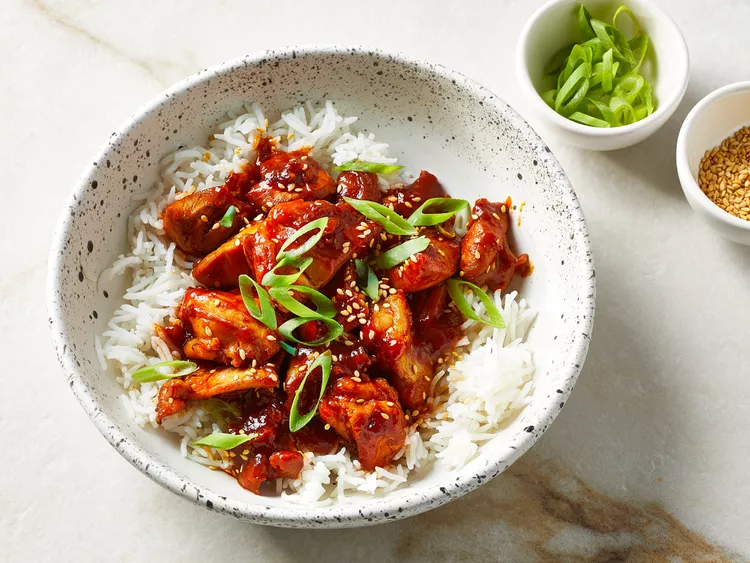

Sweet and sour gochujang chicken is a quick wok dish featuring Korean flavors. Best servced over rice.
Indulge your taste buds in the irresistible flabors of Korean cuisine with our delctable Sweet and Spicy Gochujang Chicken. This dish perfectly
balances the bold, fiery kick of gochujang , a Korean red chili paste, with a delightful sweetness that will have you craving seconds.Tender
pices of succulent chicken are coated in a rich, sticky sauce, resulting in a mouthwatering harmony of flavors and textures. Whether you're a fan of
Korean cuisine or just looking to spice up your dinner table, this dish is sure to become a family favorite. Embrace the unique and delicious taste of Korea
with this easy-to-follow recipe that delivers an explosion of sweet and spicy goodness in every bite.
Prep Time: 10 mins Cook Time: 15 mins Servings: 6
Ingredients
- 1/3 cup gochujang (Korean hot pepper paste).
- 4 tablespoons soy sauce
- 2 tablespoons mirin
- 2 tablespoons honey
- 3 cloves of garlic
- 1-2 teaspoons of sesame oil, depending on your flavor preferences
- 1 tablespoon grated ginger
- 1 tablespoon canola oil
- 2 pounds boneless,skinless chicken thighs. Cut into bite-size pieces
- Garnishes: sesame seeds and green onions
- 6 cups rice
Steps
- Stir together gochujang, soy sauce, mirin, honey, garlic, sesame oil, and ginger in a small bowl.
- Heat canola oil over medium-high heat in a wok or large skillet. Add half of the chicken and stir until chicken is no longer pink, about 5 minutes.
- Repeat for remaining pieces of chicken
- Make sure sauce is stirred well. Add sauce to the wok; cook and stir ntil sauce has thickened and is bubbly, about 3 minutes.
- Top with sesame seeds and green onions. Serve immediately with rice
Return to top
Return to main page